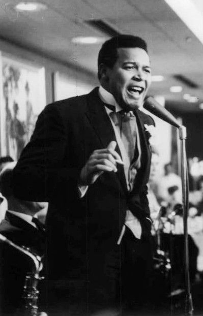

1960 music opened the decade with 19 different Billboard Hot 100 number ones.
Elvis Presley alone claimed three of them and 14 combined weeks at the top.
Orchestral instrumentals, Nashville country and early soul still shared the chart with rock and roll's teen idols.
Listen to 1960 Music
Three songs already covered on this site trace straight back to 1960, one from each of the genre shifts below.
Walk Don't Run, The Ventures
He'll Have to Go, Jim Reeves
Will You Love Me Tomorrow, The Shirelles

Table of Contents
- Listen to 1960 Music
- 1960 Music's Billboard Hot 100 Number Ones
- Key Albums Released in 1960
- Notable Events in 1960
- Genre Shifts in 1960 Music
- Play 1960 on the Radio Dial
- FAQ
1960 Music's Billboard Hot 100 Number Ones
Nineteen different singles topped the Billboard Hot 100 during 1960.
That kind of turnover at the top was rare for the chart.
Elvis Presley was the only act to land three number ones that year.
Stuck on You, It's Now or Never, and Are You Lonesome Tonight gave him a combined 14 weeks at the top, more than any other act.
Percy Faith and His Orchestra's instrumental Theme from A Summer Place held the top spot longest, nine straight weeks that spring.
| Title | Artist | Chart | Peak Date | Weeks at #1 |
|---|---|---|---|---|
| El Paso | Marty Robbins | Billboard Hot 100 | Jan 4, 1960 | 2 |
| Running Bear | Johnny Preston | Billboard Hot 100 | Jan 18, 1960 | 3 |
| Teen Angel | Mark Dinning | Billboard Hot 100 | Feb 8, 1960 | 2 |
| Theme from A Summer Place | Percy Faith and His Orchestra | Billboard Hot 100 | Feb 22, 1960 | 9 |
| Stuck on You | Elvis Presley | Billboard Hot 100 | Apr 25, 1960 | 4 |
| Cathy's Clown | The Everly Brothers | Billboard Hot 100 | May 23, 1960 | 5 |
| Everybody's Somebody's Fool | Connie Francis | Billboard Hot 100 | Jun 27, 1960 | 2 |
| Alley-Oop | The Hollywood Argyles | Billboard Hot 100 | Jul 11, 1960 | 1 |
| I'm Sorry | Brenda Lee | Billboard Hot 100 | Jul 18, 1960 | 3 |
| Itsy Bitsy Teenie Weenie Yellow Polkadot Bikini | Brian Hyland | Billboard Hot 100 | Aug 8, 1960 | 1 |
| It's Now or Never | Elvis Presley | Billboard Hot 100 | Aug 15, 1960 | 5 |
| The Twist | Chubby Checker | Billboard Hot 100 | Sep 19, 1960 | 1 |
| My Heart Has a Mind of Its Own | Connie Francis | Billboard Hot 100 | Sep 26, 1960 | 2 |
| Mr. Custer | Larry Verne | Billboard Hot 100 | Oct 10, 1960 | 1 |
| Save the Last Dance for Me | The Drifters | Billboard Hot 100 | Oct 17, 1960 | 3 |
| I Want to Be Wanted | Brenda Lee | Billboard Hot 100 | Oct 24, 1960 | 1 |
| Georgia on My Mind | Ray Charles | Billboard Hot 100 | Nov 14, 1960 | 1 |
| Stay | Maurice Williams and the Zodiacs | Billboard Hot 100 | Nov 21, 1960 | 1 |
| Are You Lonesome Tonight | Elvis Presley | Billboard Hot 100 | Nov 28, 1960 | 6 (into Jan 1961) |
Elvis Presley's Record Year
No other act came close to Presley's run in 1960 music.
Stuck on You arrived that April, fresh off his Army discharge that March.
It's Now or Never followed in August and became his best selling single of the decade.
Are You Lonesome Tonight closed out November and carried into January 1961.
That run gave him six straight chart weeks at number one.
Key Albums Released in 1960
Album sales still trailed singles in 1960 music.
A handful of releases still dominated Billboard's album chart for months at a stretch.
- Sold Out, The Kingston Trio (Capitol Records, released April 4, 1960): the group's third album to reach number one, it held the top spot for twelve weeks and earned an RIAA gold certification that same year.
- Nice 'n' Easy, Frank Sinatra (Capitol Records, released July 25, 1960): his eighteenth studio album, built around ballads recorded with arranger Nelson Riddle.
- G.I. Blues, Elvis Presley (RCA Victor, released October 1, 1960): the soundtrack to his first film after leaving the Army, and another multi-week number one.
Folk's First Foothold on the Album Chart
The Kingston Trio's run of number one albums is easy to overlook next to Presley and Sinatra.
Still, it mattered.
A clean cut, harmony driven folk trio topping the album chart for weeks at a stretch was new.
It showed labels that acoustic folk could sell in real volume, not just to a niche audience.
That commercial proof helped clear the path for the folk revival records that followed later in the decade.
Notable Events in 1960
Away from the singles chart, a few 1960 music sessions still echo through how the decade gets told.
- Joan Baez released her self-titled debut album on October 1, 1960, thirteen traditional folk songs recorded that July at Manhattan Towers Hotel in New York City. Read more on October 1
- Sam Cooke recorded Swing Low, Sweet Chariot at RCA Studios on September 9, 1960, one of several jazz and soul sessions cut that same week.
Genre Shifts in 1960 Music
Three sounds that later grew into full genre hubs on this site already left a mark in 1960.
The Ventures released the instrumental Walk Don't Run in May 1960.
It climbed to number two on the Hot 100, kept off the top only by Presley's It's Now or Never.
Its clean, reverb heavy guitar tone became a template.
The West Coast surf rock scene would plug straight into that sound a few years later.
Jim Reeves' He'll Have to Go was recorded at RCA Studio B in Nashville with producer Chet Atkins.
It reached number two on the Hot 100 in early 1960 and spent fourteen weeks atop the Hot Country Singles chart.
Its smooth strings and vocal chorus arrangement is an early example of the Nashville Sound.
That softer alternative to honky tonk went on to dominate country radio for the rest of the decade.
The Brill Building's First Number One
The Shirelles released Will You Love Me Tomorrow in November 1960.
Brill Building songwriters Gerry Goffin and Carole King wrote it.
It climbed to number one on the Hot 100 in January 1961.
That made it the first song by a girl group ever to top the chart.
The crossover from Brill Building songwriting to girl group pop stardom became one of the decade's most reliable hit making pipelines.
Play 1960 on the Radio Dial
Hear 1960 music the way listeners did, back to back and unscripted.
The site's own Play 1960 on the Radio Dial tunes every station to songs from this year alone.
FAQ
What was the number one song of 1960?
Percy Faith and His Orchestra's instrumental Theme from A Summer Place topped Billboard's year-end Hot 100 for 1960.
It spent nine weeks at number one during the spring, longer than any other single that year.
Who had the most number one hits in 1960?
Elvis Presley did, with three number ones: Stuck on You, It's Now or Never, and Are You Lonesome Tonight.
Together they gave him 14 weeks at the top, more than any other act that year.
What albums came out in 1960?
1960 music albums included The Kingston Trio's Sold Out and Frank Sinatra's Nice 'n' Easy.
Elvis Presley's Army discharge soundtrack rounded out the year.
All three reached number one on Billboard's album chart.
What kind of music was popular in 1960?
1960 mixed teen idol rock and roll with orchestral instrumentals and Nashville Sound country.
Early soul and dance novelties like The Twist were in the mix too.
That was a wider spread of styles than the Hot 100 had carried before.
When did The Twist by Chubby Checker come out?
Chubby Checker's The Twist reached number one on the Billboard Hot 100 in September 1960.
Its dance craze ran so deep that the song came back to number one again in 1962.
That comeback is a rare feat for any single.
1960 turned out to be a hinge year.
It was still built on teen idol ballads and orchestral instrumentals.
Even so, it already carried the early seeds of the Nashville Sound, the Brill Building and surf rock.
Explore how those threads played out across the whole decade on the 1960smusic.net homepage.
It is the best place to dig deeper into 1960 music.